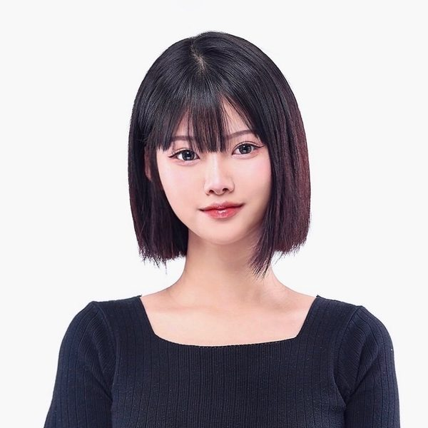
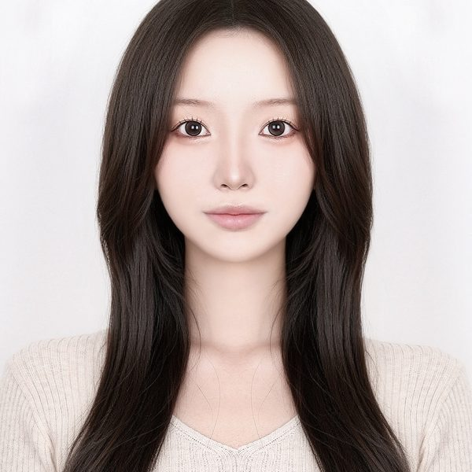
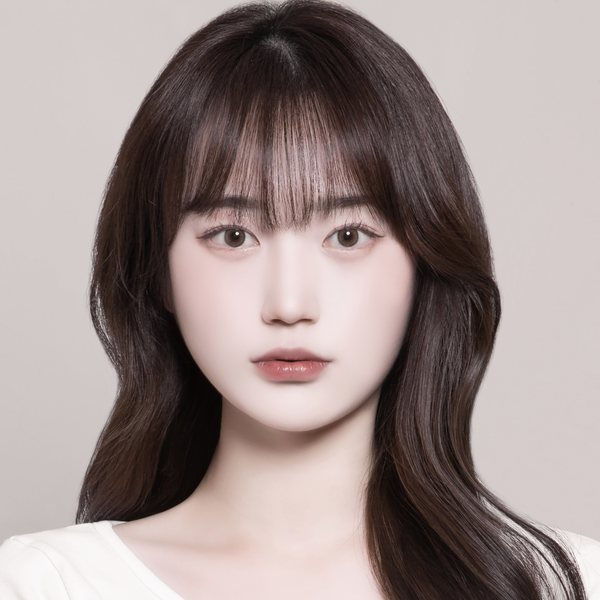
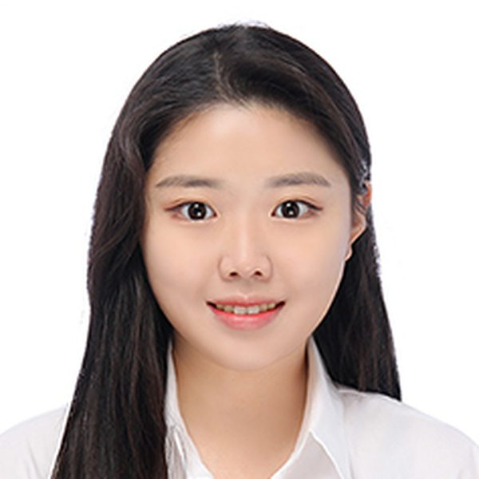
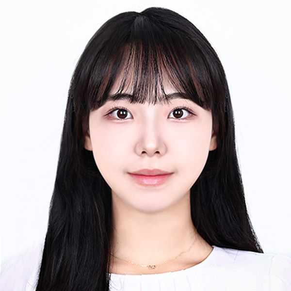
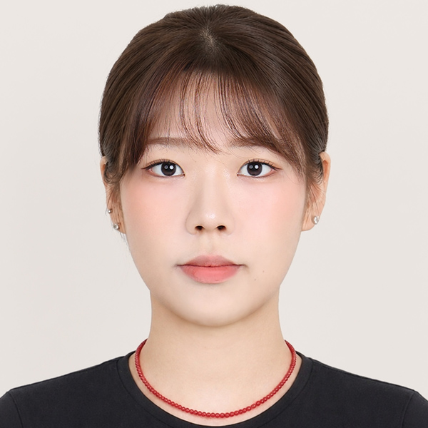

Development of a Light Duct Using Relay Lenses and Diffusers
Buildings, 15(23), 4340. LINK
채광 시뮬레이션과 실측을 병행하며,
빛이 공간에 머무는 순간을 설계합니다.
이노베이티브 스페이스 랩은 자연光과 인공조명이 만들어내는 빛환경이 공간 경험과 사용자 행태에 미치는 영향을 연구합니다. 시뮬레이션·현장 실측·공간디자인 실험을 결합해, 데이터에 근거한 채광 설계 방법론을 제안하는 것을 목표로 합니다.
일사·조도 데이터를 기반으로 공간별 채광 성능을 예측하고 최적안을 도출합니다.
실측과 사용자 반응 조사를 통해 공간의 빛환경 만족도를 정량·정성적으로 평가합니다.
채광 데이터를 설계 언어로 전환해 실내·건축 공간 프로토타입을 실험합니다.
박물관·문화공간의 공간구조와 관람동선을 분석해 공간위계 설계방안을 도출합니다.
인제대학교에서 공간디자인 전공으로 학사 및 석사학위를, 국민대학교에서 건축디자인 전공으로 박사학위를 취득하였습니다. 이후 국민대학교에서 연구교수와 조교수를 거쳐, 현재 상명대학교 천안캠퍼스 스페이스디자인전공 교수로 재직하며 이노베이티브 스페이스 랩(Innovative Space Lab)을 지도하고 있습니다. 주요 연구 분야는 채광 및 빛환경, 광선반·광정 시스템, 건물외피와 태양광 융합기술, 사용자 중심의 지능형 공간 및 외피 설계이며, 이와 함께 공간인지와 위계 등 공간디자인과 관련된 인문학적 연구에도 깊은 관심을 가지고 연구를 수행하고 있습니다.








재학생 공지원, 장지원 학생이 그동안의 노력과 성과를 담은 졸업작품 전시를 진행합니다.
교내 졸업전시는 2026년 9월 14일, 교외 졸업전시는 2026년 9월 30일 강남 모나코스페이스에서 개최됩니다.
오랜 시간 작품을 준비해 온 두 학생의 노력과 성과를 진심으로 축하하며, 뜻깊은 졸업전시가 되기를 바랍니다.
우리 연구실 졸업생 정수연이 현재 국민대학교 박사과정에 재학 중이며, 올해 교육부와 한국연구재단이 지원하는 2026년도 인문사회분야 박사과정생 연구장려금 지원사업에 최종 선정되었습니다. 이번 선정을 진심으로 축하하며, 앞으로의 연구 활동과 성과를 응원합니다.
이노베이티브 스페이스 랩(INNO Lab)의 연구와 구성원, 연구과제 및 출판 성과를 소개하는 공식 홈페이지를 개설했습니다. 홈페이지를 통해 채광·빛환경과 공간디자인을 연결하는 연구 활동과 연구실의 새로운 소식을 지속적으로 공유하겠습니다.
우리 연구실 졸업생 이현민이 디에이건축에서 프로로 특진하였습니다. 이번 특진은 이현민 졸업생의 뛰어난 실무 역량과 전문성을 인정받은 뜻깊은 성과로, 우리 연구실이 배출한 인재들의 우수한 역량을 잘 보여주는 사례이기도 합니다. 진심으로 축하하며, 앞으로도 건축·공간디자인 분야에서 더욱 뛰어난 활약을 이어가길 응원합니다.
Development of a Light Duct Using Relay Lenses and Diffusers
Buildings, 15(23), 4340. LINK
Effectiveness of improving indoor uniformity of light shelves using location-awareness technology
Journal of Building Engineering, 111, 113149. LINK
Light shelf with under-reflector solar panels for energy efficiency and lighting
Energy and Buildings, 344, 116005. LINK
Analyzing Shared Value Creation in Korea’s Public Buildings: A Latent Dirichlet Allocation Analysis
SAGE Open, 15(4), 1–15. LINK
Verification of the effectiveness of transparent photovoltaics according to the transmittance level in Seoul, South Korea
Solar Energy, 294, 113511. LINK
Evaluation of energy performance and daylight utilization in light shelves integrated with transparent solar panels
Energy, 326, 136336. LINK
Development of a Solar-Tracking Movable Louver with a PV Module for Building Energy Reduction
Buildings, 15(12), 2100. LINK
Effectiveness of internal light shelves to improve daylighting
Building Simulation, 18(4), 747–763. LINK
Evaluation of Differences in the Motivations of Elderly People to Use Senior Citizen Centers in Yeongdo-gu, Busan, Based on Old-Age Service Systems
Applied Sciences, 15(6), 3292. LINK
The Correlation Between Crime Frequency and Urban Spatial Hierarchy in Busan
Buildings, 15(7), 1010. LINK
Exploring Digital Technologies for Addressing Risk Factors of Solitary Death in South Korea
Applied Sciences, 14(17), 7439. LINK
Performance evaluation of a light shelf with a folding reflector (LSFR) to improve daylighting performance
Building and Environment, 255, 111457. LINK
Evaluation of External Light Shelf Performance in Relation to the Ceiling Types Used in Indoor Spaces
Energies, 16(24), 8107. LINK
Case study for deriving appropriate light shelf specifications based on indoor space depth
Energy and Buildings, 297, 113450. LINK
Development of a Solar Tracking-Based Movable Louver System to Save Lighting Energy and Create a Comfortable Light Environment
Buildings, 12(11), 2017. LINK
A study on the application of solar modules to light shelves to improve generation and daylighting efficiency
Energy and Buildings, 261, 111976. LINK
Study on the application of PV modules to curved light shelves
Building and Environment, 207, 108481. LINK
Light Shelf Development Using Folding Technology and Photovoltaic Modules to Increase Energy Efficiency in Building
Buildings, 12(1), 81. LINK
Performance Evaluation of External Light Shelves by Applying a Prism Sheet
Energies, 13(18), 4618. LINK
Preliminary Study on the Performance Evaluation of a Light Shelf Based on Reflector Curvature
Energies, 12(22), 4295. LINK
Performance evaluation of a light shelf with a solar module based on the solar module attachment area
Building and Environment, 159, 106161. LINK
Energy-saving performance of light shelves under the application of user-awareness technology and light-dimming control
Sustainable Cities and Society, 44, 582–596. LINK
Evaluation of a light shelf based on energy consumption for lighting and air conditioning
Indoor and Built Environment, 27(10), 1405–1414. LINK
Development of a Dimming Lighting Control System Using General Illumination and Location-Awareness Technology
Energies, 11(11), 2999. LINK
Improvement of light-shelf performance through the use of a diffusion sheet
Building and Environment, 144, 248–258. LINK
Development of a wall module employing aircap layers
Energy and Buildings, 177, 413–422. LINK
Development of Window-Mounted Air Cap Roller Module
Energies, 11(7), 1909. LINK
Development and Performance Evaluation of Light Shelves Using Width-Adjustable Reflectors
Advances in Civil Engineering, 2018, 2028065. LINK
A preliminary study on the performance of an awning system with a built-in light shelf
Building and Environment, 131, 255–263. LINK
Development of a detachable window aircap module for energy saving
Energy and Buildings, 158, 1640–1647. LINK
Study on movable light-shelf system with location-awareness technology for lighting energy saving
Indoor and Built Environment, 26(6), 796–812. LINK
Daylighting performance improvement of a light-shelf using diffused reflection
Indoor and Built Environment, 26(5), 717–726. LINK
Effectiveness of a perforated light shelf for energy saving
Energy and Buildings, 144, 144–151. LINK
폐철도의 선형공원 조성에 따른 도시위계 변화 분석 연구
한국공간디자인학회 논문집, 21(4), 77–88. LINK
파노라마 기반 온라인 박물관 관람 서비스의 공간지각 취약점 분석 및 개선 방향 연구
Journal of Integrated Design Research, 25(2), 67–82. LINK
모바일 박물관 온라인 관람 서비스에서의 제스처 중심 인터페이스 사용성 개선연구
아시아태평양융합연구교류논문지, 12(4), 325–336. LINK
보행거리를 고려한 도심내 소규모 박물관의 접근 및 인지 분석연구
아시아태평양융합연구교류논문지, 11(11), 487–498. LINK
중고령층의 건강관리 역량이 자기효능감에 미치는 영향: 디지털 헬스 리터러시의 조절효과를 중심으로
아시아태평양융합연구교류논문지, 11(9), 575–594. LINK
도시위계 기반 패션분야의 팝업스토어 이용현황 분석연구
아시아태평양융합연구교류논문지, 11(4), 447–458. LINK
지하공간의 빛환경 개선 및 조명에너지 저감을 위한 채광시스템 동향 고찰 및 기술제언 연구
아시아태평양융합연구교류논문지, 10(10), 455–464. LINK
도심내 노인친화공원의 접근성 및 인지성에 따른 이용현황 분석연구
아시아태평양융합연구교류논문지, 10(9), 409–422. LINK
어린이미술관의 입지 및 이용률에 대한 공간구문론 연구
아시아태평양융합연구교류논문지, 10(9), 455–467. LINK
고독사 위험군의 심리적 활력을 위한 활동이론 기반의 커뮤니케이션 공간 연구 - 북유럽 코하우징 사례를 중심으로
한국과학예술포럼, 42(4), 111–126. LINK
중국 박물관의 증축에 의한 공간구조 및 위계 변화 분석 연구
한국공간디자인학회 논문집, 19(4), 231–240. LINK
노인전문병원 병동부의 간호스테이션 유형에 따른 평면 구조의 위계 분석 연구
아시아태평양융합연구교류논문지, 10(6), 345–359. LINK
수도권내 어린이도서관의 접근 및 인지에 따른 이용률 분석연구
아시아태평양융합연구교류논문지, 10(5), 285–296. LINK
중국 어린이박물관 실내공간의 위계 분석에 관한 연구
한국공간디자인학회 논문집, 19(3), 523–532. LINK
제로에너지 건물 구현을 위한 루버 기술동향 및 제언 연구
아시아태평양융합연구교류논문지, 10(4), 51–65. LINK
장소안도감 증진을 위한 청년 1인 가구의 커뮤니케이션 공간 디자인 연구 - 일본의 코하우징 사례를 중심으로
한국과학예술포럼, 41(5), 127–140. LINK
생체모방기술에 의한 건물외피 에너지 저감 연구동향 및 제언
아시아태평양융합연구교류논문지, 9(11), 35–46. LINK
건물에너지 저감 성능평가를 위한 사용자기반 환경모사연구 동향분석 연구
아시아태평양융합연구교류논문지, 9(9), 17–29. LINK
건물 빛환경 성능개선을 위한 건물외피의 IT 적용 동향 분석 연구
아시아태평양융합연구교류논문지, 9(6), 1–15. LINK
건물외피에 적용되는 양면형 PV의 연구동향 및 기술제언 연구
아시아태평양융합연구교류논문지, 9(6), 77–90. LINK
건물의 조명환경 성능개선을 위한 채광시스템 연구동향 분석 연구
아시아태평양융합연구교류논문지, 9(5), 79–91. LINK
박물관 온라인 관람 콘텐츠 구현 및 연구 동향 분석 연구
아시아태평양융합연구교류논문지, 9(5), 439–449. LINK
시니어의 심리적 안녕을 위한 소셜하우징의 커뮤니케이션 공간 특성 연구
한국과학예술포럼, 41(1), 65–79. LINK
텍스트 마이닝을 활용한 공간적 관점의 고독사와 주거환경의 영향요인에 관한 융복합 연구
한국과학예술포럼, 41(1), 137–154. LINK
효율적인 건물에너지 저감을 위한 가동형 건물외피의 태양광 패널 적용 연구 동향 분석
아시아태평양융합연구교류논문지, 8(10), 13–24. LINK
관람객의 박물관 관람방식에 따른 선호도 분석 기초연구
아시아태평양융합연구교류논문지, 8(10), 283–295. LINK
어린이박물관의 공간구성 및 위계 분석 기초 연구
한국공간디자인학회 논문집, 17(5), 297–306. LINK
도심내 소공원의 위계 분석 및 이용현황 분석 연구
한국공간디자인학회 논문집, 17(5), 11–20. LINK
박물관 증축에 의한 기능의 공간 및 시각적 위계 변화 분석 연구
한국공간디자인학회 논문집, 17(3), 23–32. LINK
요양병원 대기공간의 유형에 따른 공간위계 분석 기초연구
한국공간디자인학회 논문집, 16(8), 191–200. LINK
노인요양병원 병동부 동선구조에 따른 위계분석 연구
한국공간디자인학회 논문집, 16(5), 193–202. LINK
박물관 증축유형에 따른 관람자 이용공간 위계변화에 관한 기초연구 - 국립중앙박물관 소속 박물관을 분석중심으로
한국문화공간건축학회논문집, 73, 11–20. LINK
A Study on the Hierarchy Analysis for Improving the Utilization of Parks in the Living Area: Case-based on Geumcheon-gu, Seoul, Korea
아시아태평양융합연구교류논문지, 6(12), 61–71. LINK
광선반 채광성능 개선을 위한 프리즘시트 적용 방안 연구
설비공학 논문집, 30(9), 401–412. LINK
PV 부착 광선반의 채광성능 및 에너지 저감 기초 연구
설비공학 논문집, 30(8), 376–387. LINK
광덕트의 채광성능 개선을 위한 이중반사형 산광부 개발
한국건축친환경설비학회 논문집, 12(3), 290–301. LINK
롤링을 통한 창호부착형 에어캡 모듈 개발
설비공학 논문집, 29(11), 559–569. LINK
에어캡 적층을 통한 에어캡 벽 모듈 개발
설비공학 논문집, 29(10), 504–514. LINK
확산필름 부착 위치에 따른 광선반 성능개선 연구
KIEAE Journal, 17(3), 91–97. LINK
개폐 개념의 높이 조절이 가능한 광선반 개발 연구 - 외부조도에 따른 광선반 성능평가 중심으로 -
KIEAE Journal, 17(3), 83–90. LINK
Development of Awning System using Light Shelf - Focusing on the light environment and lighting energy reduction performance improvement -
KIEAE Journal, 17(3), 5–13. LINK
창호 성능 개선을 위한 에어캡 탈부착형 모듈 개발
KIEAE Journal, 17(1), 63–68. LINK
반사판의 폭 조절이 가능한 서랍형 타입의 가동형 광선반 개발 연구
설비공학 논문집, 28(9), 343–349. LINK
실내 공간의 반사율에 따른 광선반 성능평가 연구
예술인문사회 융합 멀티미디어 논문지, 5(5), 461–470. LINK
전반조명 기반 사용자 및 위치인식기술 적용 조명제어 시스템 제안 연구
설비공학 논문집, 27(10), 527–536. LINK
결정면 적용 광선반 채광성능 평가 연구
설비공학 논문집, 27(8), 395–401. LINK
반사율에 따른 광선반 채광 성능평가 연구 - 주거공간을 중심으로 -
KIEAE Journal, 15(3), 49–56. LINK
주거공간 내 광선반 곡률 형태에 따른 채광성능평가 연구
설비공학 논문집, 27(6), 328–336. LINK
실생활기반 냉난방에너지 성능평가 방법 제안 연구
예술인문사회 융합 멀티미디어 논문지, 5(3), 291–299. LINK
에너지 저감을 위한 사용자 및 위치인식 기술 적용 디밍 조명제어 시스템 연구
설비공학 논문집, 27(1), 14–23. LINK
Performance Evaluation of Energy Reduction of Light Shelf Applying Punching Plate
KIEAE Journal, 14(6), 5–13. LINK
주거공간의 혼합형 광선반 각도 변화에 따른 채광성능 평가
설비공학 논문집, 26(9), 424–433. LINK
에너지 저감을 위한 주거공간 내 위치인식기술 적용 광선반 시스템 개발연구
설비공학 논문집, 26(6), 275–286. LINK
실내공간 깊이와 광선반 규격 변화에 의한 광선반 성능평가 시뮬레이션 연구
대한건축학회논문집, 29(3), 335–344. LINK
주거공간을 위한 IT결합 광선반시스템 개발 연구 - 조명에너지 저감을 중심으로 -
KIEAE Journal, 13(1), 133–140. LINK
주거공간 내 사용자인식기술 적용 조명에너지 저감 광선반 시스템 연구
대한건축학회논문집, 28(11), 357–365. LINK
Ubiquitous Vertical Farm의 u-주거공간 서비스 도출에 관한 연구
한국주거학회논문집, 23(5), 51–60. LINK
u-주거공간의 u-서비스 추출 방법론 및 적용에 관한 연구
한국IT서비스학회지, 10(4), 309–321. LINK
노인전문병원 평면구조의 위계에 관한 연구
한국실내디자인학회 논문집, 18(5), 183–190. LINK